|
Kenny Brown X-Factor |
|
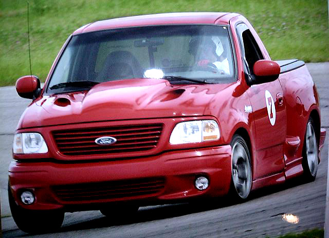 To anyone who doubts that Lightnings suffer from severe frame twist, try this test: Adjust your rear view mirror to where just the top edge of the tailgate is showing. Go over a bumpy road (one with side-to-side bumps, not just waves). The bed will dance over every bump. Or look at the bed twist and front bumper misalignment in the photo above. 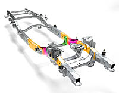The X-Factor reinforces that frame in areas similar to those stiffened on the 2004 F150. "The fully boxed frame of the new F-150 is tailored to meet demands. The sections highlighted in yellow are hydroformed to provide strength and stiffness under the passenger compartment and in the area of highest suspension loads." "The body sits atop a frame nine times stiffer in torsion and 50% stiffer in bending than the one it replaces. A fully boxed design, the cross members pass through laser-cut holes and are welded on either side of the main rail." Just look at the limp noodle we have holding everything together (97-03 Super Cab shown): 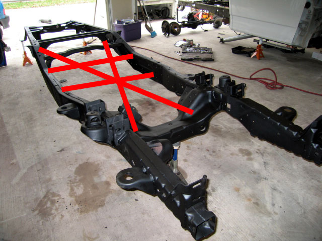 The X-Factor works by triangulating the suspension pickup points. The X-Factor ties the frame rails together as shown in the lines above. 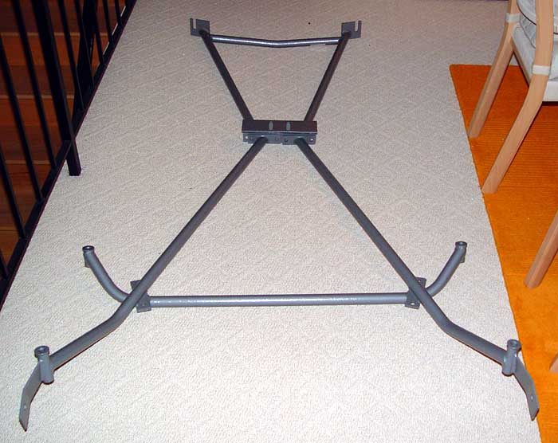 (The below photos are not mine) 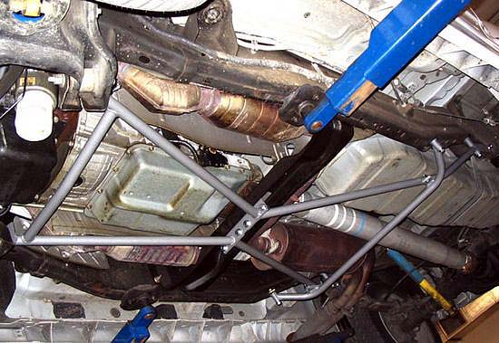 crossmember mounting: 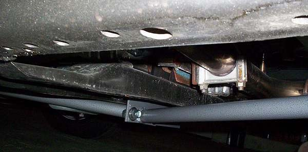 front leaf hangar bolt: 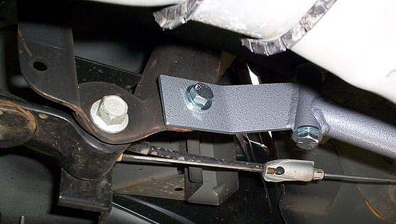
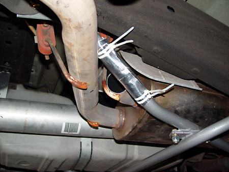Fit with other aftermarket parts: Concerns have been raised about clearance with aftermarket items such as deep transmission pans and traction bars. The only transmission pans that I know of that fit are the stock pan and the Ford 4X4 pan. The X-Factor also would not play nice with my Metco lower traction bars, Ruslow driveshaft loop, or custom exhaust. But I want chassis stiffness enough to toss them all aside. Ground clearance: There is a distinct loss of ground clearance with the X-Factor. Since each truck has a different ride height, the following are measurements with the bottom edge of the side skirt as a reference:
Front crossmember: -.5 Transmission crossmember: -.5 X-Factor (and drain plug on the 4X4 pan): -2.5" For reference, with about a 2"F/3"R drop, the ground clearance line below is at about 4". 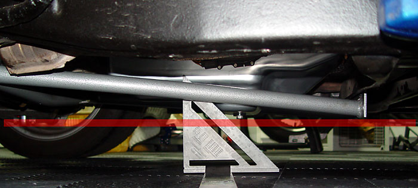 Pretty tight, but at least I'll know when the plug is ripped out of the tranny pan. And my DG air dam also sits about 4" off the ground, so at least speed bump scraping will have an early warning signal. If the unit works as advertised, all of the compromises will be worth it. Frame twist is the third worst challenge to handling that a Lightning faces (behind weight and high CG). Installation: The installation is straightforward -- at least on paper. The job could be done with ramps, but it really helps to have the entire chassis high in the air on jackstands. Also, although not required, I replaced all of the supplied Grade 5 bolts with Grade 8 parts. To install the front piece, you remove the two 18mm nuts that hold the transmission to the crossmember, then loosen the lower rear control arm pivot bolts (a 24mm socket and 21 mm wrench works best) and knock them back with a hammer. The front piece then slips onto the pivot bolts (it has u-shaped cutouts) and then over the crossmember bolts. Maybe my frame is not square, but the slots for the control arm bolts were way off (1/4" or more). With Herb's washers holding the driver's side bolt in the middle of the slot, it would not go on at all. I had to remove the Herb's washers and move the bolt to the inboard edge of the slot, and then pry open the slots in the X-Factor with a crowbar. Even after that, I had to beat the front piece in place with a deadblow hammer. But even with just the front brace in place, the frame was noticeably stiffer. When I took the truck down off of one of the front jackstands, the opposite rear wheel came off the ground. It never did that before. The rear has three pieces. The two front-to-rear pieces bolt to the front leaf hangar bolts, to the frame nearby, and then to the front piece at the crossmember. The side-to-side piece just connects the two front-to-back bars together (and also bolts into the frame). It is critical to install everything loosely first, then come back and tighten everything in small steps. The frame needs to be coaxed into proper position. If you just start tightening, the holes will not line up as well as they could and the stress will not be distributed evenly. And like anything else on the chassis, it is critical to go back after a few miles to double-check the bolts. Results: Once the installation was complete, the first thing that I noticed was the reduction in creaking and groaning sounds as the truck was taken down off of the jackstands. Full road test reports to come . . . The only thing changed was removal of the Metcos and installation of the X-Factor. More bracing?: Some have suggested that additional frame bracing in the rear would be helpful. The new Toyota X-Runner has this trick rear brace: 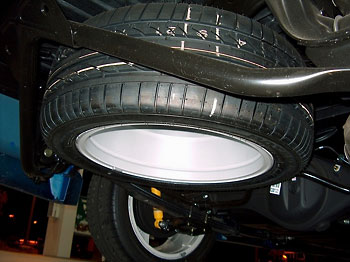 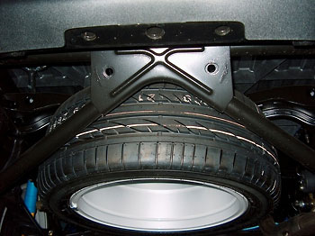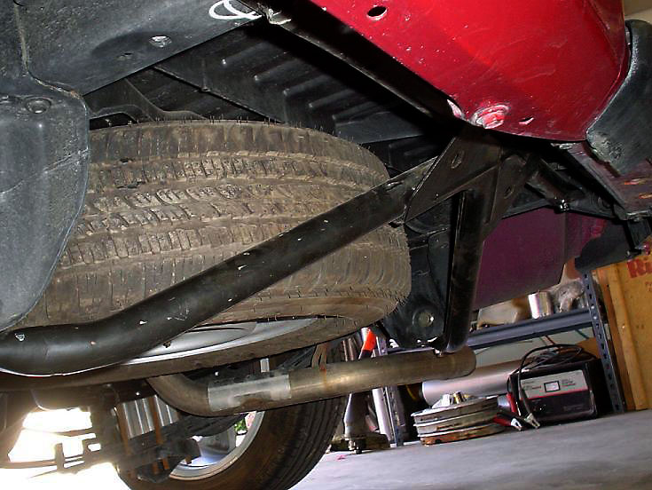 Taking off of this idea, pitstain and DMR Racing have developed this piece, which bolts onto the trailer hitch holes: 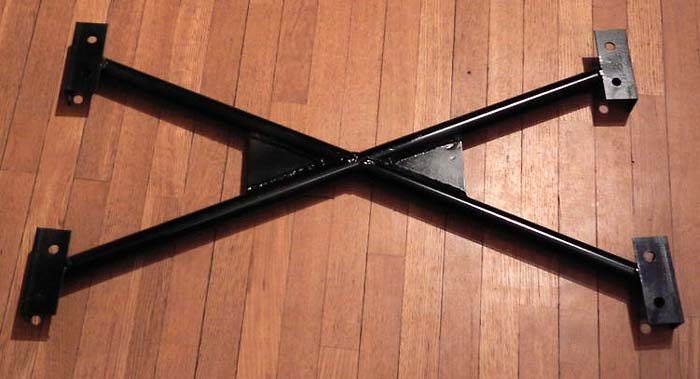 The idea comes from the observations from some that the frame seems less stiff when the trailer hitch and rear bumper are removed (I have not noticed this). Fortunately, DMR has a "deluxe" version in the works. This revised version does in fact tie into the rear leaf hangers. I believe this to be the critical feature of the Toyota brace. Unlike the Toyota, we already have a large three-dimensional cross-brace in the rear: 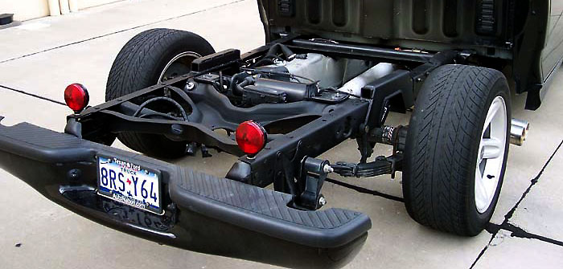 |